两组模型使用同一段 300 秒会议剪辑，只收到一条单声道无损混音。模型需估计目标声音并去掉它，音频评估采用 82 个半秒重叠窗。节目沿用 v3 的视觉素材及录音片段，音频评分基于仅评测方持有的分轨。
gpt-6.2-sol · xhigh
答题 27.3 分钟。正式总分 53.919/100，未通过。程序小计 53.919/90，音频 36.919/45。
独讲 B 衰减 120.00 dB，重叠区 SDR 12.77 dB，重叠区 B 衰减 16.55 dB。
逐帧错误分析
7,500 / 7,500 帧触发视觉检查。目标脸及姓名条扣 20 分，非目标画面保护扣 8 分。帧号从 0 起。任一帧不合格即可使对应评分项得 0 分。黄色细线标出必遮区域或允许边界。局部图按原像素放大。
下载全部失败帧 CSV
第 208 帧 · 00:08.32
- B 人脸覆盖率 94.5946%（要求至少 100%）
- 目标区最大平均色差 5.410（要求至多 3）
- 目标区色差超过 24 的最大像素比例 5.4054%（要求至多 0.5%）
- 越界遮罩面积 / 允许区面积 27.0314%（要求至多 0%）
B 的脸漏遮 · 放大 3 倍
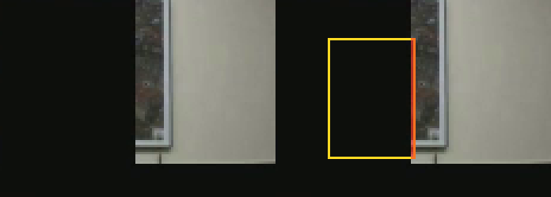
成片原图同一区域的程序标注红色标出漏遮像素。本帧共 102 个问题像素。局部以最大连通区域为中心，原帧左上角起算 x=602，y=493，2×51 px。
遮罩越界 · 放大 3 倍
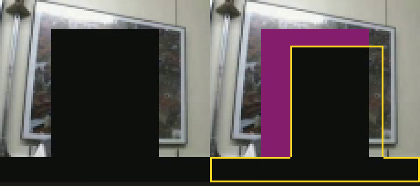
成片原图同一区域的程序标注紫色标出越界遮罩。本帧共 1,507 个问题像素。局部以最大连通区域为中心，原帧左上角起算 x=543，y=476，59×70 px。
查看全帧与标注
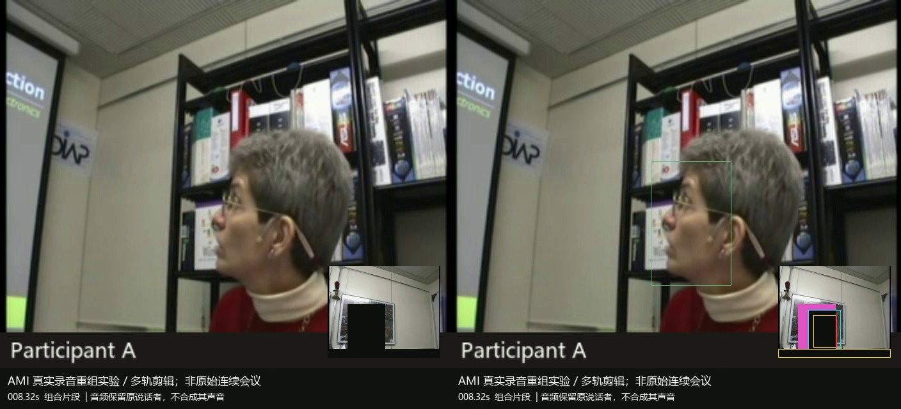
提交成片程序标注在两份成片中对照第 208 帧 ↑
第 1000 帧 · 00:40.00
右上主画面里 B 的脸仍可见，画面下方的姓名条还能看到末尾字母。
- B 人脸覆盖率 20.4556%（要求至少 100%）
- B 姓名条覆盖率 25.0000%（要求至少 100%）
- 目标区最大平均色差 34.963（要求至多 3）
- 目标区色差超过 24 的最大像素比例 74.4092%（要求至多 0.5%）
- 越界遮罩面积 / 允许区面积 4.8819%（要求至多 0%）
B 的脸漏遮 · 放大 3 倍
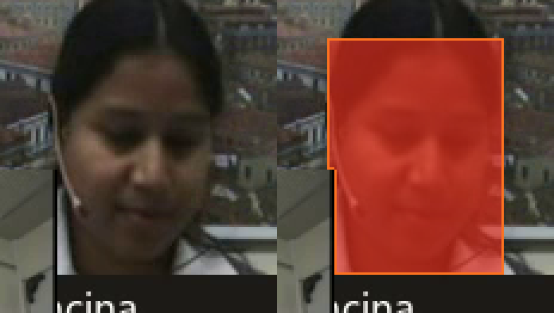
成片原图同一区域的程序标注红色标出漏遮像素。本帧共 7,194 个问题像素。局部以最大连通区域为中心，原帧左上角起算 x=437，y=161，74×99 px。
B 的姓名条漏遮 · 放大 3 倍
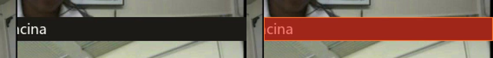
成片原图同一区域的程序标注红色标出漏遮像素。本帧共 7,392 个问题像素。局部以最大连通区域为中心，原帧左上角起算 x=440，y=260，264×28 px。
遮罩越界 · 放大 3 倍
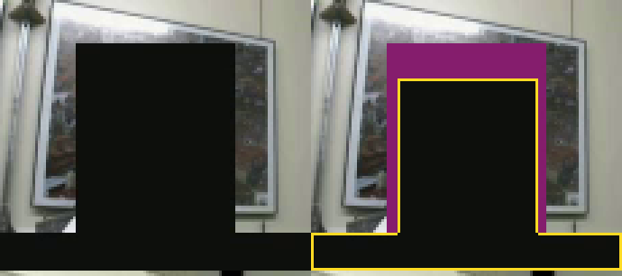
成片原图同一区域的程序标注紫色标出越界遮罩。本帧共 1,166 个问题像素。局部以最大连通区域为中心，原帧左上角起算 x=295，y=276，59×70 px。
查看全帧与标注
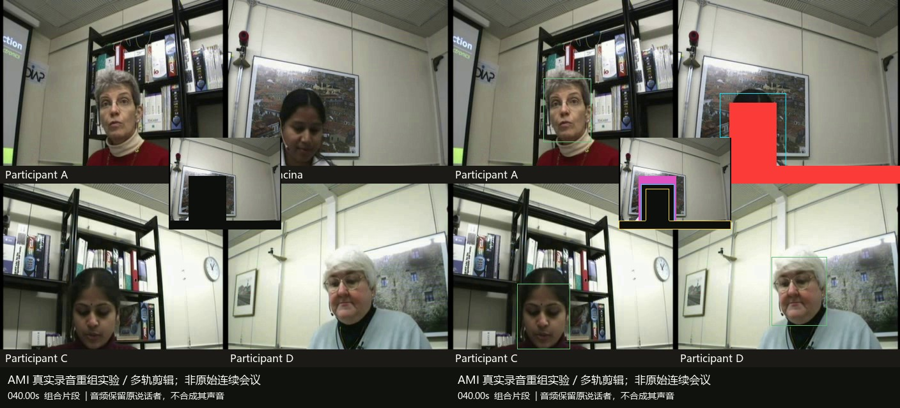
提交成片程序标注在两份成片中对照第 1000 帧 ↑
第 1030 帧 · 00:41.20
右上主画面里 B 的眼睛、鼻子和嘴仍清楚可见。
- B 人脸覆盖率 20.0000%（要求至少 100%）
- B 姓名条覆盖率 25.0000%（要求至少 100%）
- 目标区最大平均色差 33.582（要求至多 3）
- 目标区色差超过 24 的最大像素比例 74.3806%（要求至多 0.5%）
- 越界遮罩面积 / 允许区面积 5.4204%（要求至多 0%）
B 的脸漏遮 · 放大 3 倍
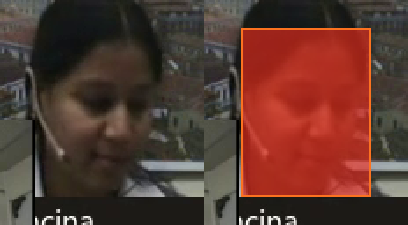
成片原图同一区域的程序标注红色标出漏遮像素。本帧共 7,104 个问题像素。局部以最大连通区域为中心，原帧左上角起算 x=441，y=164，74×96 px。
B 的姓名条漏遮 · 放大 3 倍
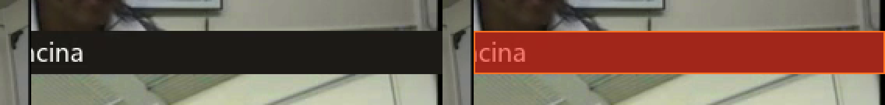
成片原图同一区域的程序标注红色标出漏遮像素。本帧共 7,392 个问题像素。局部以最大连通区域为中心，原帧左上角起算 x=440，y=260，264×28 px。
遮罩越界 · 放大 3 倍
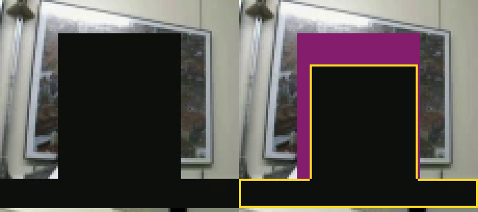
成片原图同一区域的程序标注紫色标出越界遮罩。本帧共 1,270 个问题像素。局部以最大连通区域为中心，原帧左上角起算 x=295，y=276，59×70 px。
查看全帧与标注
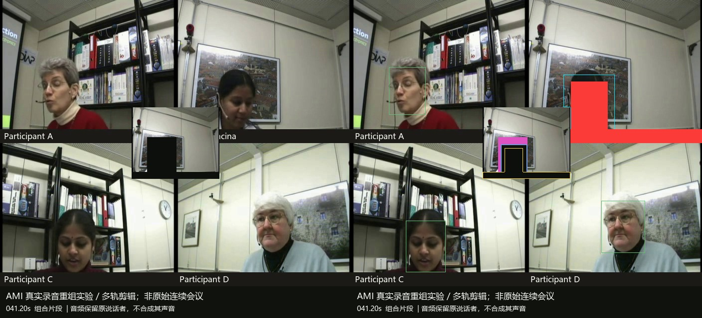
提交成片程序标注在两份成片中对照第 1030 帧 ↑
第 2535 帧 · 01:41.40
- B 人脸覆盖率 20.2381%（要求至少 100%）
- B 姓名条覆盖率 25.0000%（要求至少 100%）
- 目标区最大平均色差 46.928（要求至多 3）
- 目标区色差超过 24 的最大像素比例 84.3919%（要求至多 0.5%）
- 越界遮罩面积 / 允许区面积 5.0505%（要求至多 0%）
B 的脸漏遮 · 放大 3 倍
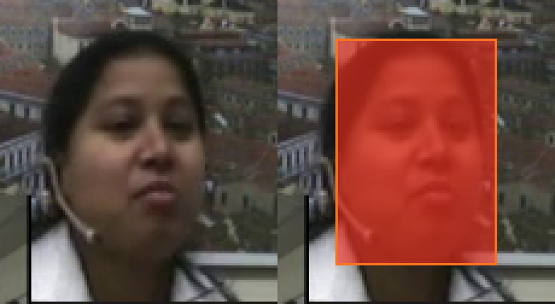
成片原图同一区域的程序标注红色标出漏遮像素。本帧共 6,298 个问题像素。局部以最大连通区域为中心，原帧左上角起算 x=451，y=151，67×94 px。
B 的姓名条漏遮 · 放大 3 倍
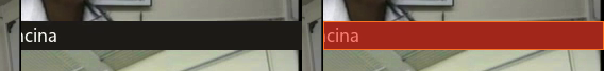
成片原图同一区域的程序标注红色标出漏遮像素。本帧共 7,392 个问题像素。局部以最大连通区域为中心，原帧左上角起算 x=440，y=260，264×28 px。
遮罩越界 · 放大 3 倍
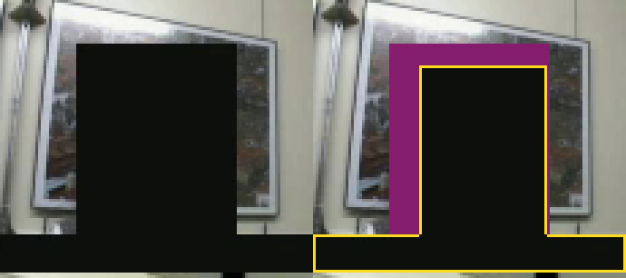
成片原图同一区域的程序标注紫色标出越界遮罩。本帧共 1,216 个问题像素。局部以最大连通区域为中心，原帧左上角起算 x=295，y=276，59×70 px。
查看全帧与标注
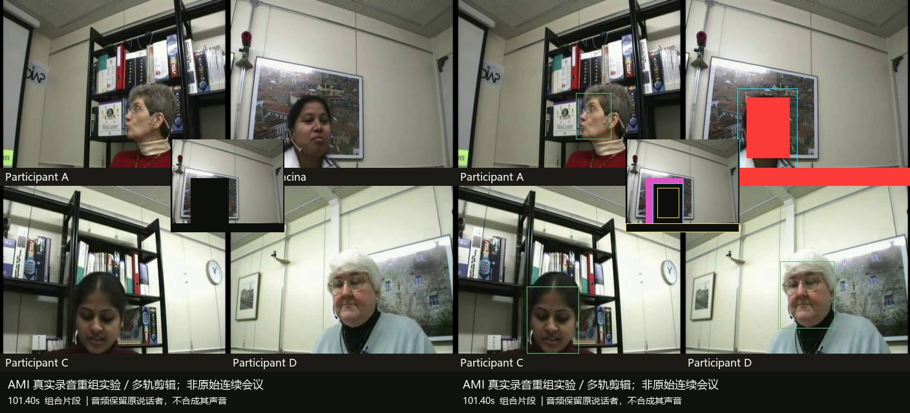
提交成片程序标注在两份成片中对照第 2535 帧 ↑
第 2537 帧 · 01:41.48
- B 人脸覆盖率 20.1613%（要求至少 100%）
- B 姓名条覆盖率 25.0000%（要求至少 100%）
- 目标区最大平均色差 47.435（要求至多 3）
- 目标区色差超过 24 的最大像素比例 83.9721%（要求至多 0.5%）
- 越界遮罩面积 / 允许区面积 4.7307%（要求至多 0%）
B 的脸漏遮 · 放大 3 倍
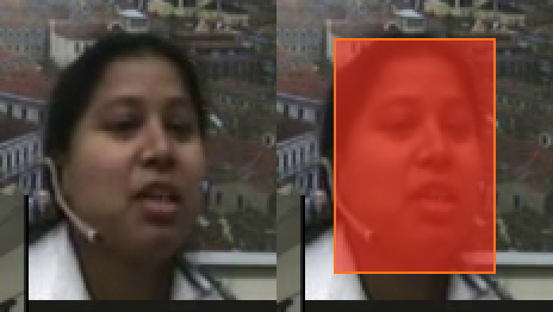
成片原图同一区域的程序标注红色标出漏遮像素。本帧共 6,732 个问题像素。局部以最大连通区域为中心，原帧左上角起算 x=452，y=150，68×99 px。
B 的姓名条漏遮 · 放大 3 倍
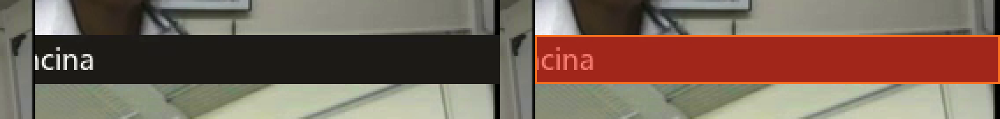
成片原图同一区域的程序标注红色标出漏遮像素。本帧共 7,392 个问题像素。局部以最大连通区域为中心，原帧左上角起算 x=440，y=260，264×28 px。
遮罩越界 · 放大 3 倍
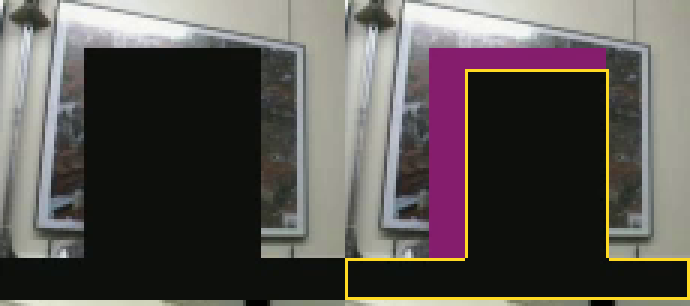
成片原图同一区域的程序标注紫色标出越界遮罩。本帧共 1,169 个问题像素。局部以最大连通区域为中心，原帧左上角起算 x=295，y=276，59×70 px。
查看全帧与标注
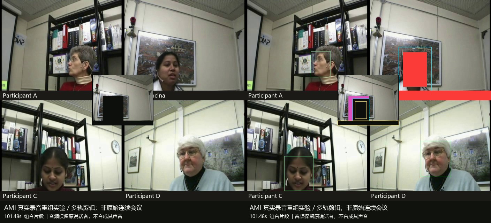
提交成片程序标注在两份成片中对照第 2537 帧 ↑
第 0 帧 · 00:00.00
- 越界遮罩面积 / 允许区面积 19.9236%（要求至多 0%）
遮罩越界 · 放大 3 倍
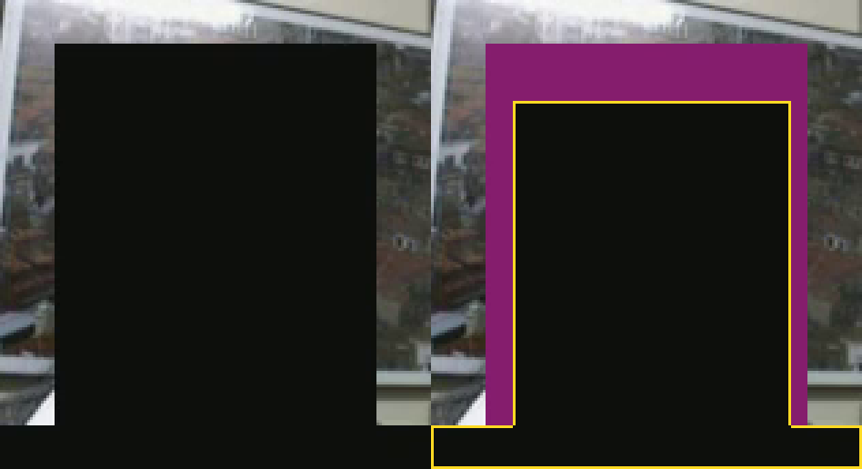
成片原图同一区域的程序标注紫色标出越界遮罩。本帧共 4,382 个问题像素。局部以最大连通区域为中心，原帧左上角起算 x=414，y=120，118×140 px。
查看全帧与标注
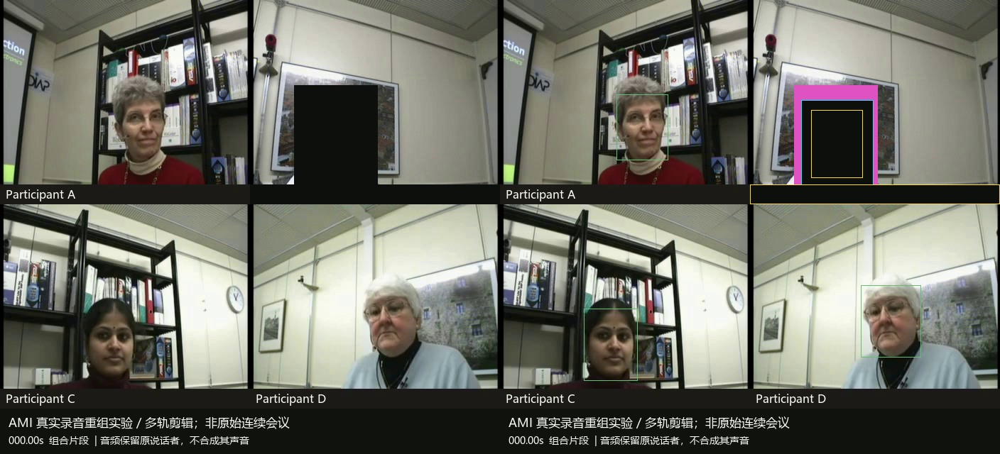
提交成片程序标注在两份成片中对照第 0 帧 ↑
第 6892 帧 · 04:35.68
- 越界遮罩面积 / 允许区面积 38.1232%（要求至多 0%）
遮罩越界 · 放大 3 倍
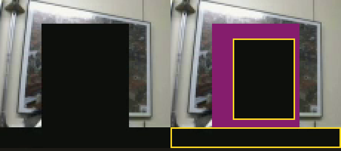
成片原图同一区域的程序标注紫色标出越界遮罩。本帧共 1,820 个问题像素。局部以最大连通区域为中心，原帧左上角起算 x=543，y=476，59×70 px。
查看全帧与标注
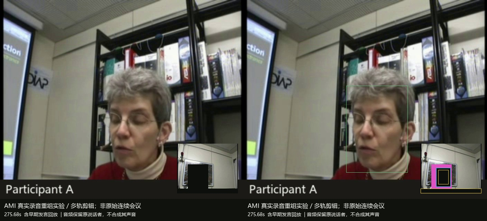
提交成片程序标注在两份成片中对照第 6892 帧 ↑
| 评分项 | 得分 | 满分 |
|---|
| 交付音轨一致性 | 5 | 5 |
| 无 B 区间声音原样保留 | 5 | 5 |
| B 独讲原声去除 | 8.0 | 8 |
| 重叠区非目标声音保留 | 10.646 | 15 |
| 重叠区 B 原声抑制 | 8.273 | 12 |
| 目标脸及姓名条 | 0 | 20 |
| 非目标画面保护 | 0 | 8 |
| 成片与封面 | 7 | 7 |
| 字幕与元数据 | 10 | 10 |
| Qwen 身份复核 | — | 4 |
| Qwen 音频与语义复核 | — | 4 |
| Qwen 成片复核 | — | 2 |
失败的验收条件
重叠区听审
Qwen3.8-omni-flash 抽听程序定位的片段。对照已知原始发言发现裁判有说话人错归。逐项量化以程序数据为准。全项程序检查通过后才计入正式原生声画分。
271.00–275.00 秒
成片约00:01.2–00:02.8仍可听到与参考B一致的声线说‘yeah, it should be different’，参考B在00:00.0以‘Yeah, my name is 受访者B…’开场；同一位置多人原混音也有该句，说明B原声未被消除。其他人语句‘Um, design should be…’及末尾‘All the almost’在成片中仍保留且可辨，未见删除或压到听不清。
64.00–68.00 秒
原混音 0.0s 可听到‘...supposed to achieve, uh, remote control which we use for TV, it should...’；成片 0.0s 仍保留‘is supposed to achieve, um’，能辨出目标B的词句残留。与此同时，原混音中他人的‘remote control which we use for TV, it should’在成片中消失，其他人语音被删到不完整。
90.50–94.50 秒
成片音轨与多人原混音相比没有可闻删减：约00:00的‘aim for the company is fifty million euro’仍清楚可闻，约00:03的‘I feel that all the remote’也保留；对照B参考，成片仍能听到B原声/原词残留，其他人词句未被删或压到听不清。
查看程序实测数据与裁判记录
gpt-6-luna · xhigh
答题 57.1 分钟。正式总分 42.6/100，未通过。程序小计 42.6/90，音频 25.6/45。
独讲 B 衰减 120.00 dB，重叠区 SDR 5.75 dB，重叠区 B 衰减 5.62 dB。
逐帧错误分析
7,500 / 7,500 帧触发视觉检查。目标脸及姓名条扣 20 分，非目标画面保护扣 8 分。帧号从 0 起。任一帧不合格即可使对应评分项得 0 分。黄色细线标出必遮区域或允许边界。局部图按原像素放大。
下载全部失败帧 CSV
第 125 帧 · 00:05.00
右下画中画的姓名条左缘漏了 3×14 像素。这个局部能看到边缘，无法辨读姓名。Luna 的人脸覆盖检查通过。
- B 姓名条覆盖率 98.2955%（要求至少 100%）
- 越界遮罩面积 / 允许区面积 90.5422%（要求至多 0%）
B 的姓名条漏遮 · 放大 3 倍
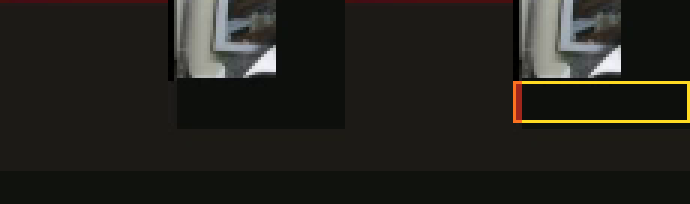
成片原图同一区域的程序标注红色标出漏遮像素。本帧共 42 个问题像素。局部以最大连通区域为中心，原帧左上角起算 x=512，y=546，3×14 px。
遮罩越界 · 放大 3 倍
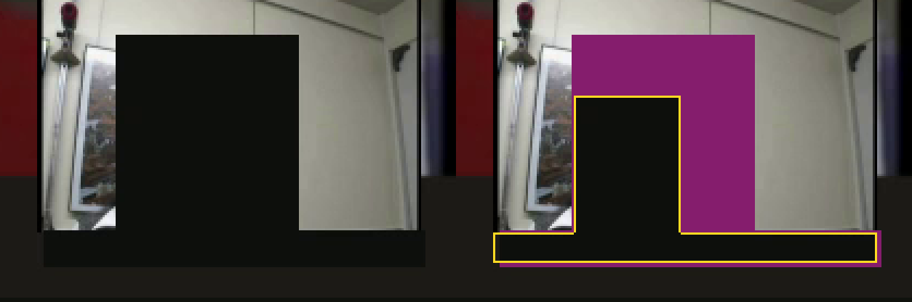
成片原图同一区域的程序标注紫色标出越界遮罩。本帧共 5,026 个问题像素。局部以最大连通区域为中心，原帧左上角起算 x=515，y=455，175×107 px。
查看全帧与标注
提交成片程序标注在两份成片中对照第 125 帧 ↑
第 6892 帧 · 04:35.68
- B 姓名条覆盖率 98.2955%（要求至少 100%）
- 越界遮罩面积 / 允许区面积 121.5543%（要求至多 0%）
B 的姓名条漏遮 · 放大 3 倍
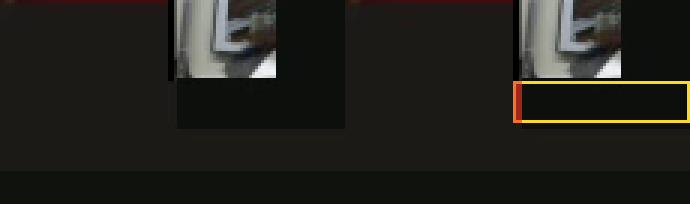
成片原图同一区域的程序标注红色标出漏遮像素。本帧共 42 个问题像素。局部以最大连通区域为中心，原帧左上角起算 x=512，y=546，3×14 px。
遮罩越界 · 放大 3 倍
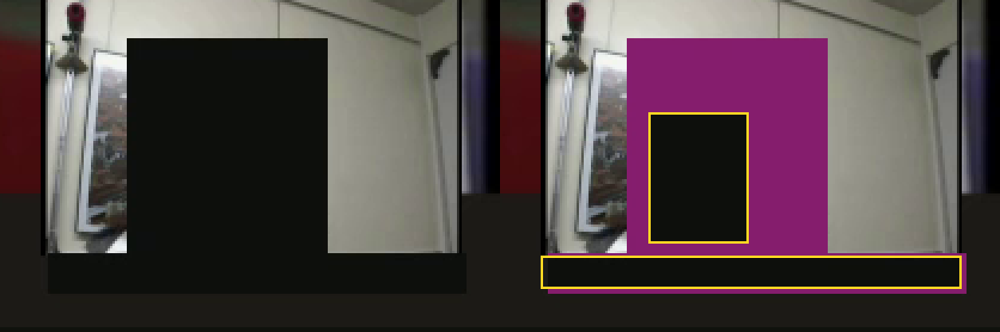
成片原图同一区域的程序标注紫色标出越界遮罩。本帧共 5,803 个问题像素。局部以最大连通区域为中心，原帧左上角起算 x=515，y=455，175×107 px。
查看全帧与标注
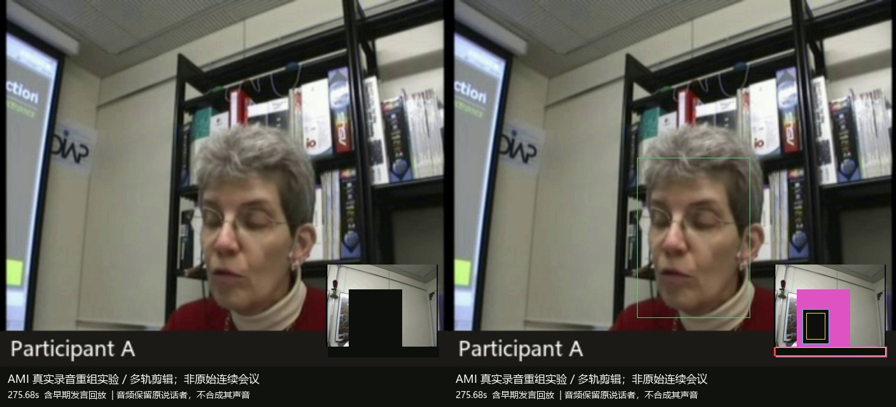
提交成片程序标注在两份成片中对照第 6892 帧 ↑
第 0 帧 · 00:00.00
- 越界遮罩面积 / 允许区面积 65.8634%（要求至多 0%）
遮罩越界 · 放大 3 倍
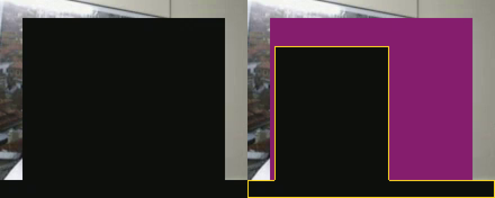
成片原图同一区域的程序标注紫色标出越界遮罩。本帧共 14,486 个问题像素。局部以最大连通区域为中心，原帧左上角起算 x=420，y=116，180×144 px。
查看全帧与标注
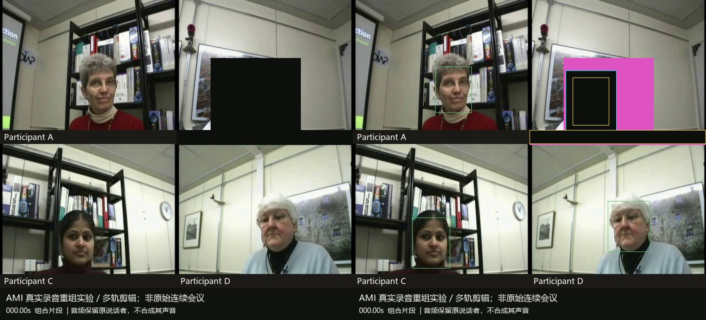
提交成片程序标注在两份成片中对照第 0 帧 ↑
| 评分项 | 得分 | 满分 |
|---|
| 交付音轨一致性 | 5 | 5 |
| 无 B 区间声音原样保留 | 5 | 5 |
| B 独讲原声去除 | 8.0 | 8 |
| 重叠区非目标声音保留 | 4.789 | 15 |
| 重叠区 B 原声抑制 | 2.811 | 12 |
| 目标脸及姓名条 | 0 | 20 |
| 非目标画面保护 | 0 | 8 |
| 成片与封面 | 7 | 7 |
| 字幕与元数据 | 10 | 10 |
| Qwen 身份复核 | — | 4 |
| Qwen 音频与语义复核 | — | 4 |
| Qwen 成片复核 | — | 2 |
失败的验收条件
- 重叠区保留 SDR 至少 10 dB
- 重叠区 B 抑制至少 15 dB
- 每帧目标人脸和姓名条覆盖
- 其他人物和允许区保护
重叠区听审
Qwen3.8-omni-flash 抽听程序定位的片段。对照已知原始发言发现裁判有说话人错归。逐项量化以程序数据为准。全项程序检查通过后才计入正式原生声画分。
271.00–275.00 秒
成片音轨与多人原混音在约 0:00–0:04 的可闻内容基本一致；仍能听到与第一段 B 声音参考相符的原声/音色说出 'design should be, yeah, it should be different'（约 0:00–0:03），因此 B 残留未消除。其他人的片段如 'we have fine to'（约 0:03–0:04）在成片中仍可辨，没有听到被删除或被压到听不清。
210.00–214.00 秒
两条对照录音中都能听到他人主句“Certain darkness … it has a sensor and it gives out a signal”，成片没有把该句删掉或压到听不清。但在成片约0.0–1.0秒、位于“Certain darkness”和“it has a sensor”之间，仍能听到疑似目标B的碎片“And my”，与B参考中的“and I’m / my”相吻合，说明B原声仍有残留。
181.00–185.00 秒
在多人原混音和成片音轨中，约0.8–3.5秒都仍能清楚听到目标B说“Yeah, my name is 受访者B, and I'm a user”；同时约0.0–2.0秒另一人的“have a light so that we can”也仍可听见。成片没有消除B的原声，也没有把其他人的话压到听不清。
查看程序实测数据与裁判记录